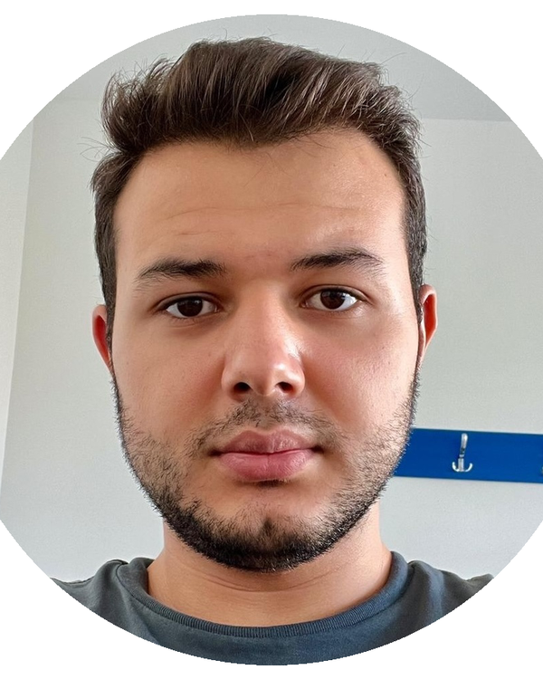

Veriyi, anlaşılır çözümlere dönüştürüyorum.
Ben Yunus Emre Karadağ. Bilgisayar mühendisiyim; veri bilimi, makine öğrenmesi, açıklanabilir yapay zekâ ve veri görselleştirme alanlarında projeler geliştiriyorum.

Projeler
Veri hazırlama, model açıklanabilirliği, veritabanı tasarımı ve dashboard geliştirme gibi farklı ihtiyaçlara odaklanan projeler.
Explainova
Kodlama bilgisi olmayan kullanıcılar için geliştirilen uçtan uca makine öğrenmesi platformu. Eksik değer, aykırı değer, encoding ve feature selection adımlarını tek akışta toplar; classification/regression modellerini karşılaştırır; SHAP, PDP ve ICE ile sonuçları açıklar.
Mobil Uygulama Mağazası Veritabanı Tasarımı ve Görselleştirme
Mobil uygulama mağazası senaryosu için ER diyagramı, ilişkisel şema, normalizasyon çalışması, SQL sorguları ve Tableau dashboard tasarımı.
Öğrenci Yoklama Takip Sistemi
Flask arayüzü, PostgreSQL veri katmanı ve ZeroMQ mesajlaşma yapısıyla geliştirilen web tabanlı yoklama takip sistemi.
Restoran Yönetim Sistemi
Rezervasyon, sipariş, menü ve restoran operasyonları için ilişkisel tablolar ve temel SQL sorguları içeren veritabanı tasarımı.
Yetenekler
Model geliştirme kadar veri kalitesi, yorumlanabilirlik ve sonucun doğru sunulmasına da önem veriyorum.
Programlama
Python, SQL, C#, Java, C
Web & Uygulamalar
Flask, Streamlit, HTML/CSS
Veritabanı
PostgreSQL, ER Modeling, Database Design
Veri Bilimi & ML
Pandas, NumPy, scikit-learn, SHAP
Görselleştirme
Tableau, Matplotlib, Seaborn, Jupyter Notebook
Yazılım Pratikleri
Git, GitHub, Data Preprocessing, Model Evaluation
Deneyim ve eğitim
Akademik çalışmalarımı uygulamalı projeler ve staj deneyimiyle destekledim.
Stajyer, Telcorex
Python ile veri hazırlama, keşifsel veri analizi ve makine öğrenmesi model eğitimi süreçlerine destek verdim. Pandas, NumPy ve scikit-learn ile veri ön işleme ve model değerlendirme akışlarını uyguladım.
Bilgisayar Mühendisliği
Alanya Alaaddin Keykubat Üniversitesi, Bilgisayar Mühendisliği lisans programı. Odak alanları: veri bilimi, makine öğrenmesi, veritabanı sistemleri, yazılım geliştirme ve veri görselleştirme.
Dil
CV ve portfolyo içeriği Türkçe ve İngilizce olarak hazırlanmıştır.
İngilizce
B2 seviyesi
Sertifikalar
Huawei AI Bootcamp; Git & GitHub - BTK Akademi; Data Science & Data Visualization - Turkcell; Machine Learning - Udemy; UX-UI 101 - Pupilica.
CV
Dil seçimine göre Türkçe veya İngilizce CV bağlantısı açılır.
Bana ulaşın.
Veri bilimi, makine öğrenmesi, veri analitiği ve backend odaklı yeni mezun pozisyonları için form üzerinden mesaj bırakabilirsiniz.